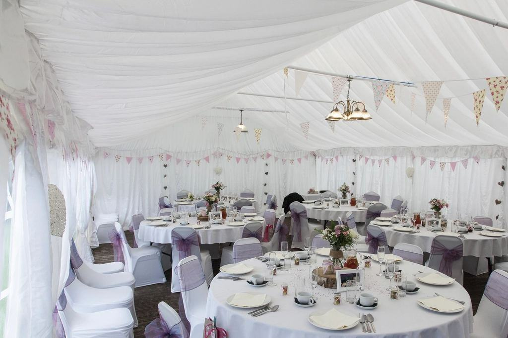

Portfolio
Ett urval av bröllop vi har fotograferat – från små vigslar till stora fester.
- 2026

Maja & Leo
Första kabinen upp, vigsel vid toppstugan och frukost i Kabinbanans dalstation.
- 2026

Klara & Nils
Snöskor, tolv gäster och fika över öppen eld efter vigseln.
- 2025
Emma & Rasmus
Nitton kilometer från Storulvån och vigsel framför Storsylen klockan nio på kvällen.
- 2025

Tove & Jenny
Vigsel med forsen i bakgrunden och middag på ett värdshus i Undersåker.
- 2024

Lars & Hedda
Lyft till en platå ovanför Ullåfjället och vigsel i midnattsljus.
- 2027

Sara & Jonathan
Bokat för juli – första paret på den nya rutten mot Kallsjön.


Uppför, i blåst och nöjda
Emma R. · Sylarna”Petter vände oss femhundra meter under toppen när vinden ökade, och vi gifte oss i en svacka i lä i stället. Bilderna är bättre än vad toppen hade gett.”
Sara J. · Stockholm”Vi hade aldrig gått mer än en mil. De planerade pauser, fika och en rutt vi faktiskt klarade.”
Tove & Jenny · Undersåker”Ida klippte en film där man hör forsen och mina mormors tal. Vi tittar på den varje bröllopsdag.”